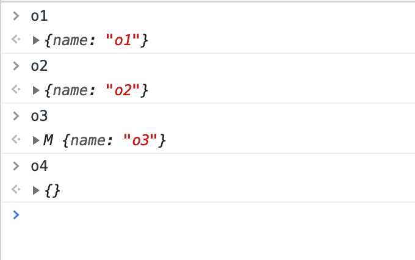
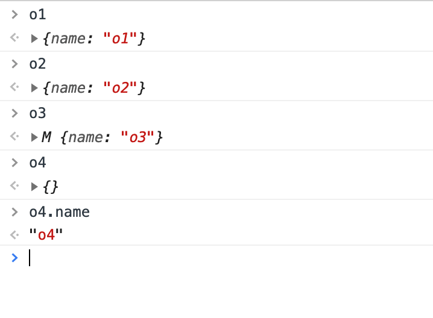
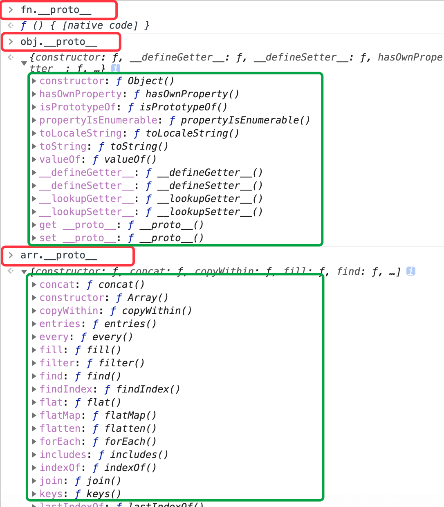
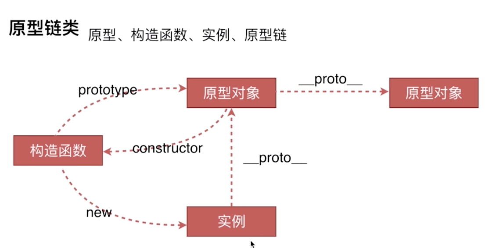
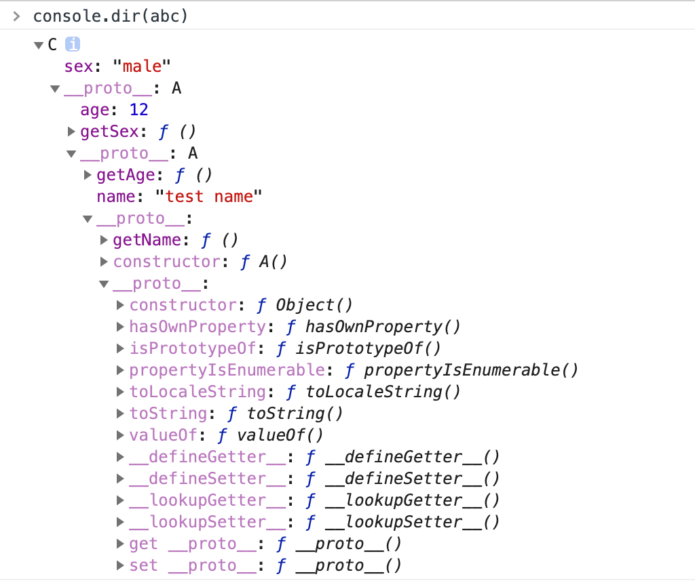

创建对象的几种方式
1、字面量法
1
var o1 = {name: 'o1'};
2、构造函数法（构造函数首字母大写）
1
2
3
4
5
6
7
8var o2 = new Object({name: 'o2'});
var M = function (name) {
this.name = name;
// return this // 默认有这一行
};
var o3 = new M('o3'); // 实例
3、Object.create()法
1
var o4 = Object.create({name: 'o4'});
以上的运行结果如下：

我们看到o3和o4的运行结果有些不一样，o3前面的M表示构造函数，o4却不显示属性
但是运行o4.name发现其实是有值的，具体原因参考：leijee blog

构造函数扩展
var arr = []其实是var a = new Array()的语法糖；var obj = {}其实是var a = new Object()的语法糖；function Foo(){}其实是var Foo = new Function(){}；
即 arr 的构造函数是 Array, obj 的构造函数是 Object，Foo 的构造函数是 Function。
原型规则
规则1：所有的引用类型（数组、对象、函数），都具有对象特性，可自有扩展属性（null 除外）
1
2
3
4
5
6
7
8var obj = {};
obj.a = 100; // {a: 100}
var arr = [];
arr.a = 100; // [a: 100]
function fn(){};
fn.a = 100;规则2：所有的引用类型（数组、对象、函数），都有一个
__proto__(隐式原型) 属性，属性值是一个普通的对象1
2
3console.log(obj.__proto__);
console.log(arr.__proto__);
console.log(fn.__proto__);结果如下图：

规则3：所有的函数，都有一个
prototype(显示原型) 属性，属性值是一个普通的对象1
console.log(fn.prototype); // {constructor: ƒ}
规则4：所有的引用类型（数组、对象、函数），
__proto__(隐式属性) 属性值指向它的构造函数的prototype(显示原型) 属性值1
2
3console.log(obj.__proto__ === Object.prototype); // true
console.log(arr.__proto__ === Array.prototype); // true
console.log(fn.__proto__ === Function.prototype); // true规则5：当试图得到一个对象的某个属性时，如果这个对象本身没有这个属性，那么会去它的
__proto__（即它的构造函数的prototype）中去寻找，如果一层没有找到，就继续往上查找，一直到Object.prototype为止。因为Object.prototype等于null会自动停止。1
2
3
4
5
6
7
8
9
10
11
12
13
14
15
16
17
18
19
20
21
22
23
24
25
26
27
28
29// 构造函数
function Foo(name, age) {
this.name = name;
}
// 扩展属性（规则1）
Foo.prototype.alertName = function () {
alert(this.name);
};
// 创建一个实例f
var f = new Foo('zhangsan');
// 扩展属性（规则1）
f.printName = function () {
console.log(this.name);
};
// 测试
f.printName();
f.alertName(); // (规则5)
// f本身没有 alertName 属性，它会去它自身的隐式原型 即f.__proto__ (也即是它的构造函数的显示原型 Foo.prototype)中去寻找这个属性
f.toString(); // (规则5)
// f本身没有 toString 属性，它会去它自身的隐式原型 即f.__proto__ (也即是它的构造函数的显示原型 Foo.prototype)中去寻找这个属性
// 但是 Foo.prototype 中并没有找到这个属性，但是因为 Foo.prototype 本身也是一个对象，所以会继续向上寻找，Foo.prototype 的构造函数是 Object
// 即去 f.__proto__.__proto__中查找，也即是 Object.prototype 中查找，最终发现了toString
f.__proto__ === Foo.prototype; // true
f.__proto__.__proto__ === Object.prototype; // true
循环对象自身的属性
对于上例，循环f自身的属性：1
2
3
4
5
6
7
8for (let item in f) {
if (f.hasOwnProperty(item)) {
console.log(item);
}
}
// name
// printName
instanceof
1 | f instanceof Foo; // f是否是Foo的一个实例 |
构造函数、原型对象、实例、原型链关系网
关系网如下：

1
2
3
4
5
6
7
8
9
10
11
12
13
14
15var M = function (name) {
this.name = name;
}; // 构造函数
var o3 = new M('o3'); // 实例o3
var o4 = new M('o4'); // 实例o4
// M: 是一个构造函数，任何普通函数在使用new运算符之后都变成构造函数
// o3、o4: 实例
// M.prototype: 原型对象
// M.prototype.constructor: 原型对象的构造器，M.prototype.constructor === M
// o3.__proto__: 实例的__prto__属性，o3.__proto__ === M.prototype
// 实际上函数也有__proto__属性，M.__proto__ === Function.prototype，这个逻辑说明M构造函数是Function的一个实例

面试题：写一个原型链继承的demo
1 | // 父类 |
打印 console.dir(abc);

从图中我们可以看出，通过 prototype 扩展的属性会挂载在 __proto__ 属性下，通过 hasOwnProperty 方法可过滤扩展的属性1
2abc.hasOwnProperty('sex'); // true
abc.hasOwnProperty('getSex'); // false
我们可以打印一下隐式原型 __proto__ 和显式原型 prototype 的关系图
打印 console.log(abc.prototype)，输出为 undefined，我们可以知道，实例是没有 prototype 属性的
面试题：写一个实际应用中使用原型链的例子
1 | // 实现类似jquery html()和on(event, fn)方法 |
面试题：描述 new 一个对象的过程
1 | function Foo(name, age) { |
- 创建一个对象
this指向这个新对象- 执行代码，即对
this赋值 - 返回
this，内部会有一句默认的return this